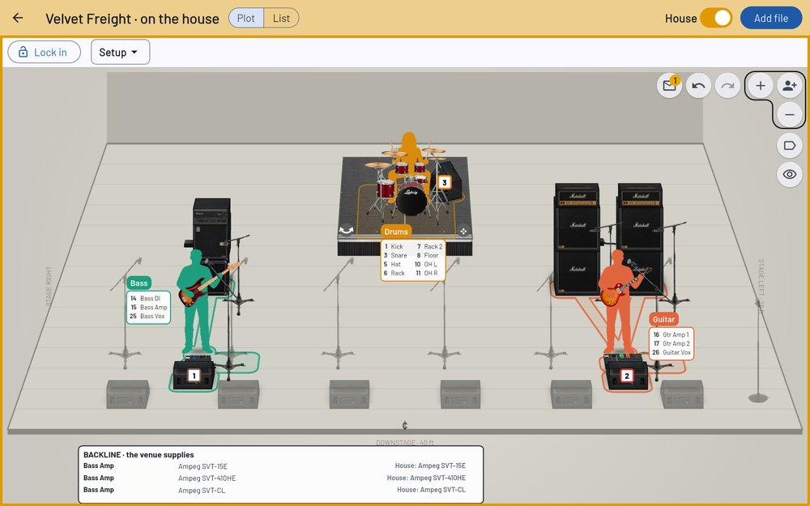

Stage plots

The stage
People are silhouettes in their colour holding their own instrument; amps, kits, wedges and boxes are drawn at real size. Drag to move (a person and their gear move together), tap for the strip of choices at the bottom. The toolbar on the right: Add gear and the − under it (grey until you tap a piece, then red — it deletes that piece), Options (the gear), Messages (the envelope), Undo, Redo, Fit, the input list, Backline (the truck), Mics and stands, Stage size, Labels (None, Some, All) and Quick start. SELECT (bottom right) is off at the start: a drag moves a person with their gear; turn it on to pick several pieces and move them together. Add person and Add item are the round buttons in the bottom-left corner.
A band's window
On the Show page tap a band's plot picture. Its corner holds Messages (the envelope), Undo, Redo, +, Add person, the − under it, Labels and, on the house, the eye (hides the greyed house pieces). Plot | List in the bar switches to their input list. The House switch puts the band on your stage; off, it shows what they sent.
- A tap on bare floor adds a player only on the house; as sent it just closes what is open.
- A hold opens a piece's details; a tap on a player's name renames them.
- Drop a piece right on a player or amp and it joins them.
- A piece stops at the front edge — delete with the −.
Inputs, mixes and stands
Channels number themselves and the input list stands beside the stage, as on paper. Wedges and in-ear packs carry a mix number. Tap a mic for its stand. A DI's 48V (red when on) and mono / stereo are in its strip.
Drums
Kits are drawn from their pieces at real size; tap a kit for the Kit builder (sizes, + Add piece, Jazz / Rock / Big) with the kit's extras, drum area and drummer's monitor.
Printing and sending
Options → Export → Send (PDF) first lists anything to fix (Fix first or Send anyway), asks what to include, then makes one PDF — the stage, the input list, mixes and the Backline page — with the plot's own file inside it, so it opens as a plot again. It prints clearly in black and white. Share by QR shows the whole plot as a QR; the printed stage carries it in its corner. Share file sends the plot file alone; Print goes straight to a printer.